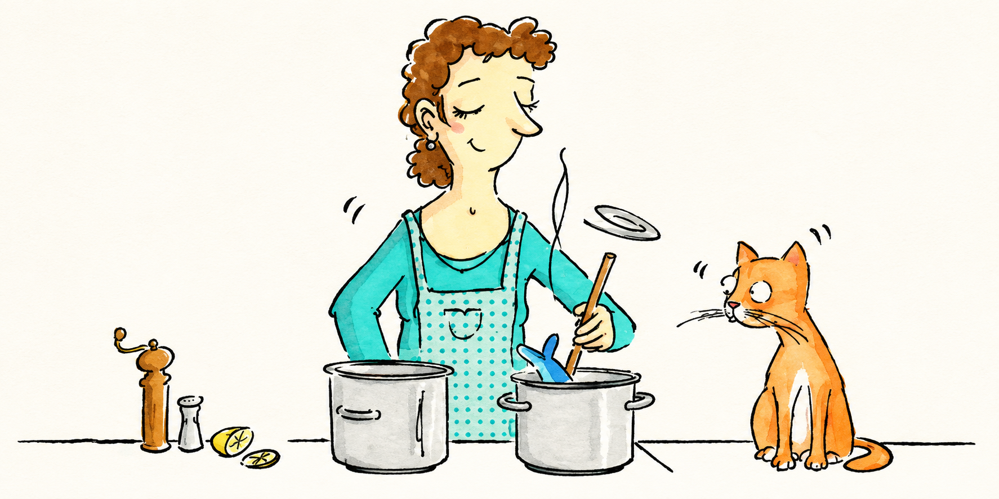
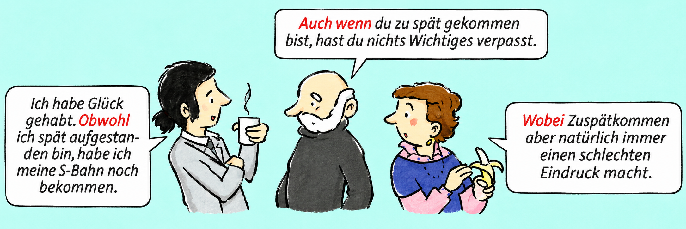
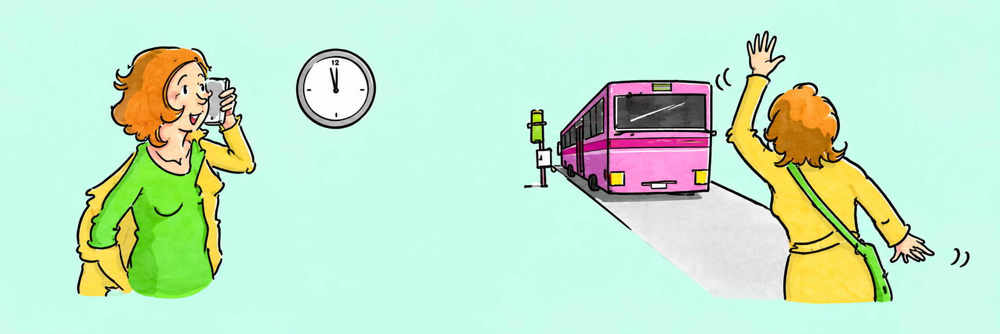
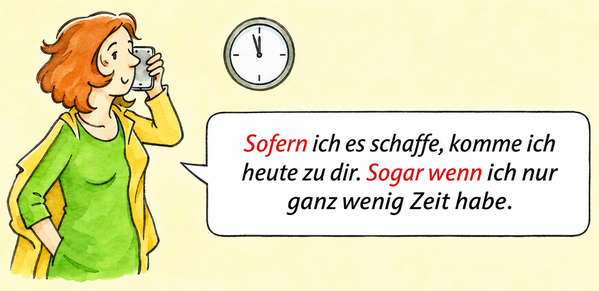
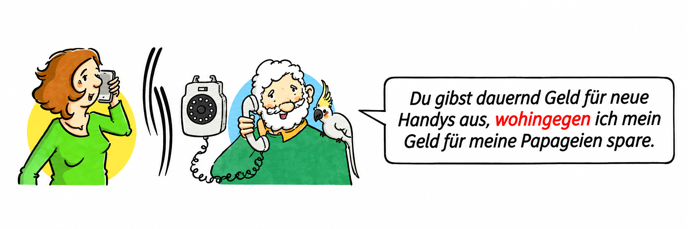
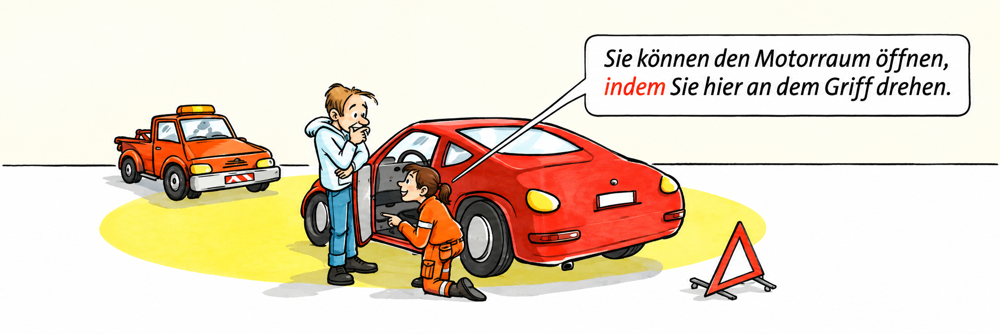

Temporale Nebensätze
Temporale Nebensätze zeigen, wann, wie lange oder wie oft etwas geschieht.

| Konnektor | Erklärung | Beispiel |
|---|---|---|
| während | zwei parallele Aktivitäten | Während ich koche, sieht mich meine Katze die ganze Zeit an. |
| nachdem | Reihenfolge: Aktion 1 – Aktion 2 | Nachdem ich gekocht habe, esse ich und meine Katze bekommt Futter. |
| bevor ehe |
Reihenfolge: Aktion 2 – Aktion 1 | Bevor / Ehe ich eine Katze hatte, war ich beim Kochen allein und unbeobachtet. |
| bis | Ende einer Phase / Aktion | Bis das Essen fertig ist, verlässt die Katze die Küche nicht. |
| seit(dem) | Beginn in der Vergangenheit, jetzt noch (meistens mit Präsens) | Seitdem / Seit ich eine Katze habe, habe ich beim Kochen Publikum. |
| wenn | Routine / mehrmals passiert oder einmal passiert in Gegenwart oder Zukunft | Wenn ich koche, (dann)** kommt die Katze in die Küche und setzt sich neben den Herd.
Wenn ich früher gekocht habe, war ich unbeobachtet. |
| als | einmal in der Vergangenheit passiert | Als ich gestern Fisch gekocht habe, war die Katze besonders aufgeregt. |
| solange | zwei parallele Aktivitäten / Phasen bis zum Ende einer Aktion / Phase | Solange ich koche, bleibt die Katze neben mir sitzen. |
| sobald sowie |
sofort wenn, Anfang einer Aktion | Sobald / Sowie ich esse, will die Katze auch ihr Futter haben. |
| sooft | jedes Mal wenn, wiederholte Aktion | Sooft ich auch die Katze aus der Küche schicke, steht sie eine Minute später wieder am Herd. |
* Der nachdem-Satz muss immer in einer Zeitstufe vor dem Hauptsatz stehen.
** Nach dem wenn-Satz kann der Hauptsatz mit einem dann beginnen.
Kausale Nebensätze
Warum geschieht etwas?
Der Nebensatz nennt den Grund.
| Konnektor | Erklärung | Beispiel |
|---|---|---|
| weil | Der weil-Satz steht meistens nach dem Hauptsatz. | Ich komme so spät, weil mein Bus eine Panne hatte. |
| da | Der da-Satz steht meistens auf Position 1. Auf „Warum …?“ antwortet man nicht mit einem da-Satz. | Da der öffentliche Nahverkehr so schlecht finanziert wird, wundert mich das nicht. |
| zumal C1 | Ein zusätzlicher Grund / ein Nachtrag* | …, zumal auch die Ausbildung der Fahrer immer schlechter geworden ist. |
* Im Kontext steht der zumal-Satz und der wobei-Satz manchmal alleine.
Konzessive Nebensätze
Trotz welcher Tatsache geschieht etwas?
Der Nebensatz nennt einen Umstand, der eine andere Folge erwarten lässt.

| Konnektor | Erklärung | Beispiel |
|---|---|---|
| obwohl | seltener auch, meist in der Schriftsprache: obschon, obzwar und obgleich | Obwohl ich spät aufgestanden bin, habe ich meine S-Bahn noch bekommen. |
| auch wenn C1 | Auch wenn du zu spät gekommen bist, hast du nichts Wichtiges verpasst. | |
| wobei C1 | Der Konnektor wobei macht aus dem vorhergehenden Satz einen Gegengrund und nennt selbst ein neues, wichtiges Argument.* Häufiger in der gesprochenen Sprache. | (Du hast nichts Wichtiges verpasst), wobei Zuspätkommen aber natürlich immer einen schlechten Eindruck macht. |
| ungeachtet dessen, dass C1 | in der gehobenen Sprache auch: ungeachtet der Tatsache, dass … | Ungeachtet dessen, dass die Chefin meist freundlich reagiert, würde ich in nächster Zeit vorsichtiger sein und pünktlich kommen. |
* Diese Nebensätze nennt man auch „weiterführende Nebensätze“. Sie können nicht vor dem Hauptsatz stehen.
Konsekutive Nebensätze
Welche Folge hat das?
Zuerst steht die Situation im Hauptsatz. Der Nebensatz mit der Folge steht immer danach.

| Konnektor | Erklärung | Beispiel |
|---|---|---|
| sodass | Ich war spät, sodass ich den Bus verpasst habe. | |
|
so … dass dermaßen …, dass derart …, dass |
Das Wort „so“ vor dem Adjektiv wird betont gesprochen. Dadurch wird das Adjektiv hervorgehoben. Auch: dermaßen und derartig vor dem Adjektiv. |
Ich war so spät, dass ich den Bus verpasst habe. Ich war dermaßen / derart spät, dass ich den Bus verpasst habe. Ich hatte eine derartige Verspätung, dass ich den Bus verpasst habe. |
| Wenn kein Adjektiv im Satz ist, steht das so / dermaßen / derartig beim Verb. Man versteht das Adjektiv aus dem Kontext. |
Ich bin so / dermaßen gerannt, dass ich ganz außer Atem war. (Man versteht: … so / dermaßen schnell gerannt, …) |
|
| weshalb C1 weswegen C1 |
Weshalb und weswegen machen aus dem vorhergehenden Satz einen Grund für die folgende Aktion*. Sie können immer durch einen Hauptsatz mit deshalb / deswegen / darum ersetzt werden. | Ich war sehr spät, weshalb / weswegen ich auch den Bus verpasst habe. |
| zu … als dass + Konjunktiv 2 C1 | Negative Konsequenz: „zu … als dass“ (+ Konjunktiv 2) nennt die positive Alternative, die nicht realisiert ist. | Ich war zu spät, als dass ich den Bus noch bekommen hätte. |
Grund und Folge unterscheiden
Grund Mira verpasste den Bus, weil sie spät aufstand.
Folge Mira stand spät auf, sodass sie den Bus verpasste.
Konditionale Nebensätze
Unter welcher Bedingung gilt etwas?
Der Hauptsatz sagt, was in diesem Fall geschieht.

| Konnektor | Erklärung | Beispiel |
|---|---|---|
| wenn falls |
= Unter der Bedingung, dass ich Zeit habe, komme ich zu dir. Wenn kann auch temporal verstanden werden. Der wenn-Satz steht häufig auf Position 1. Falls hat nur konditionale Erklärung. |
Wenn ich Zeit habe, (dann) komme ich heute zu dir. Falls ich Zeit habe, komme ich. |
| nur wenn sogar wenn außer wenn |
Wenn kann mit vielen Wörtern kombiniert werden: nur wenn = ausschließlich wenn sogar wenn = Bedingung wird als etwas Besonderes hervorgehoben selbst wenn, außer wenn … |
Nur wenn ich Zeit habe, komme ich. Ich komme, sogar wenn ich nur ganz wenig Zeit habe. |
| sofern C1 gesetzt den Fall, dass C1 vorausgesetzt, dass C1 |
Hauptsächlich in der gehobenen Sprache verwendet. |
Sofern ich Zeit habe, komme ich. Gesetzt den Fall, dass ich Zeit habe, komme ich. Vorausgesetzt, dass ich Zeit habe, komme ich. |
| uneingeleiteter Konditionalsatz | Der uneingeleitete Konditionalsatz muss vor dem Hauptsatz stehen. Das Verb steht auf Position 1. Häufig mit sollte. In der gesprochenen Sprache selten verwendet. |
Komme ich heute nicht mehr, rufe ich dich an. Sollte ich Zeit haben, komme ich heute noch. |
Adversative Nebensätze
Worin liegt der Gegensatz?
Zwei Aussagen werden einander gegenübergestellt.

| Konnektor | Erklärung | Beispiel |
|---|---|---|
| während | Manchmal kann während sowohl adversativ als auch temporal verstanden werden. | Während ich immer das neueste Handy habe, benutzt du eine Antiquität. |
| wohingegen | Wohingegen macht aus dem vorhergehenden Satz einen Gegensatz für die folgende Aktion*. Er kann immer durch einen Hauptsatz mit dagegen ersetzt werden. | Du gibst dauernd Geld für neue Handys aus, wohingegen ich mein Geld für meine Reisen spare. |
* Diese Nebensätze nennt man auch „weiterführende Nebensätze“. Sie können nicht vor dem Hauptsatz stehen.
Modale Nebensätze
Wie oder wodurch erreicht man etwas?
Der Nebensatz beschreibt das Mittel oder die Methode.

| Konnektor | Erklärung | Beispiel |
|---|---|---|
| indem | Frage: Wie? | Sie können den Motorraum öffnen, indem Sie hier an dem Griff drehen. |
| dadurch dass |
Frage: Wie? Wodurch? Dadurch dass kann auch getrennt werden. Der Satzteil, vor dem dadurch steht, wird hervorgehoben und betont gesprochen. Dadurch dass kann auch kausale Erklärung haben (Grund): Sie hat viele Vorteile, dadurch dass sie sehr gut Deutsch spricht. Sätze mit dadurch dass in kausaler Erklärung können nicht mit indem umgeformt werden. |
Der Motorraum öffnet sich, dadurch dass Sie an dem Griff drehen. Ich kam dadurch noch pünktlich, dass mir der Autodienst geholfen hat. |
| wodurch C1 |
Wodurch macht aus dem vorhergehenden Satz (im Nachhinein) eine modale Information für die Aussage des folgenden Satzes.* Sätze mit wodurch können auch kausale Erklärung haben. Nebensätze mit wodurch können durch einen Hauptsatz mit dadurch ersetzt werden. |
Ich drehte an dem Griff, wodurch sich der Motorraum öffnete. |
* Diese Nebensätze nennt man auch „weiterführende Nebensätze“. Sie können nicht vor dem Hauptsatz stehen.
Satzbau auf einen Blick
Zwischen Haupt- und Nebensatz steht ein Komma.
Im eingeleiteten Nebensatz steht das konjugierte Verb in der Regel am Ende.
Beispiel:
Die Forscherin prüft das Ergebnis, indem sie die Messung wiederholt.
Steht der Nebensatz zuerst, folgt normalerweise direkt nach dem Komma das konjugierte Verb des Hauptsatzes. Ein vorausgehender wenn-Satz kann im Hauptsatz durch dann auf der ersten Position im Hauptsatz wiederaufgenommen werden.
Beispiel:
Wenn ich Zeit habe, (dann) komme ich.
Indem sie die Messung wiederholt, prüft die Forscherin das Ergebnis.
Quelle: Grammatik aktiv B2–C1, Kapitel 62–66, S. 164–172. Überarbeitet mit ChatGPT.